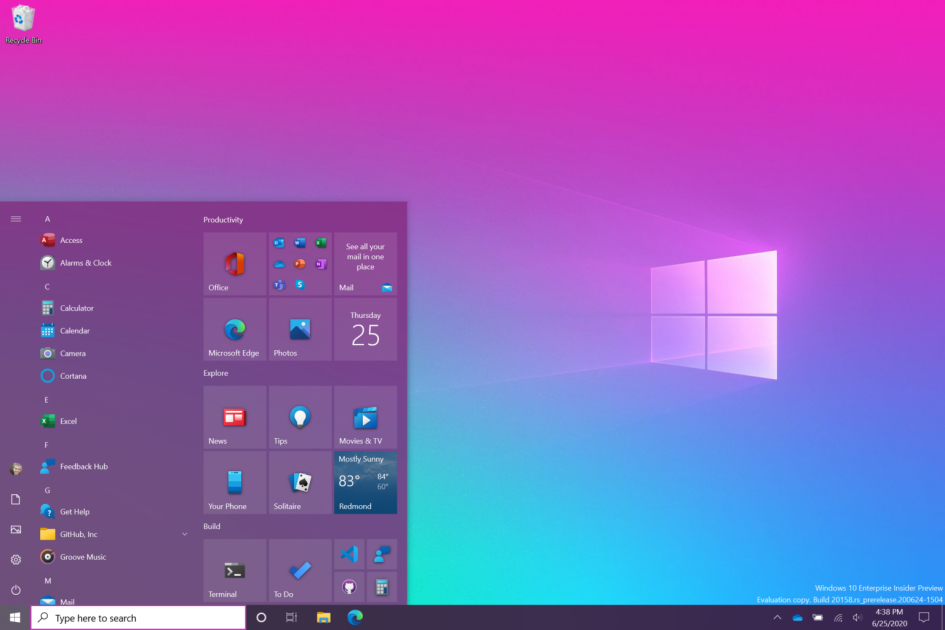

Piața de telefoane 5G din România devine din ce în ce mai competitivă și apar opțiuni care mai de care mai accesibile. Chiar dacă 5G nu e disponibil pe scară largă!
Iată cinci dispozitive ieftine și bune cu 5G pe care le poți achiziționa acum în România: Xiaomi Redmi Note 9t, Samsung Galaxy A32 5G, Motorola Moto G 5G, OnePlus Nord
WhatsApp: Surpriza Neplacuta adusa de Actualizarea de Astazi
WhatsApp a fost actualizata din nou de catre compania americana, noua versiune fiind
acum disponibila pentru toata lumea prin intermediul magazinelor de aplicatii pentru telefoanele mobile.
Actualizarea lansata de catre WhatsApp astazi vine cu o masura care este impusa pentru telefoaneleiPhone din intreaga lume, mai exact, suportul pentru iOS 9 a fost eliminat de catre compania americana, astfel ca utilizatorii raman fara acces la platforma.
Google Chrome nu va mai funcţiona pe PC-uri şi smartphone-uri mai vechi
Într-un update care ar putea veni foarte curând, Google Chrome va renunța complet la suportul pentru computere echipate cu procesoare fără SSE3. SSE3 (Streaming SMID Extenstion 3/Presscot New Instructions) este un set de instrucțiuni introdus prin 2004 pe procesoarele momentului, începând cu generația Pentium 4 de la Intel.
De când cu pandemia, proletarii au conferințe online si apeluri audio-video
Pentru unii mumă, pentru alții ciumă, WhatsApp pășește pe teren minat de ceva vreme. Tot mai mulți spală putina și aleg să se tăifăsuiască prin intermediul altor aplicații de tip Telegram, Signal, chiar și Wickr, pentru voi, ăștia mai…Vicleni..
Microsoft reîmprospăteaza aspectul lui Windows 10

Ultimele luni au fost cu actualizări pentru Windows 10 acestea fiind mult pe interfața grafică. Însă Microsoft nu vrea să se oprească aici, iar în ultimele câteva zile fanii sistemului de operare au observat o ofertă de muncă din partea companiei. Nimic ciudat până acum, dar totul căpăta cumva sens odată cu descrierea.
Aplicațiile Android se închid brusc?
Încă de acum câteva ore, mai mulți utilizatori Android au început să aibă probleme serioase cu telefoanele lor. Este vorba despre închiderea aplicațiilor brusc și afișarea unui mesaj de eroare.